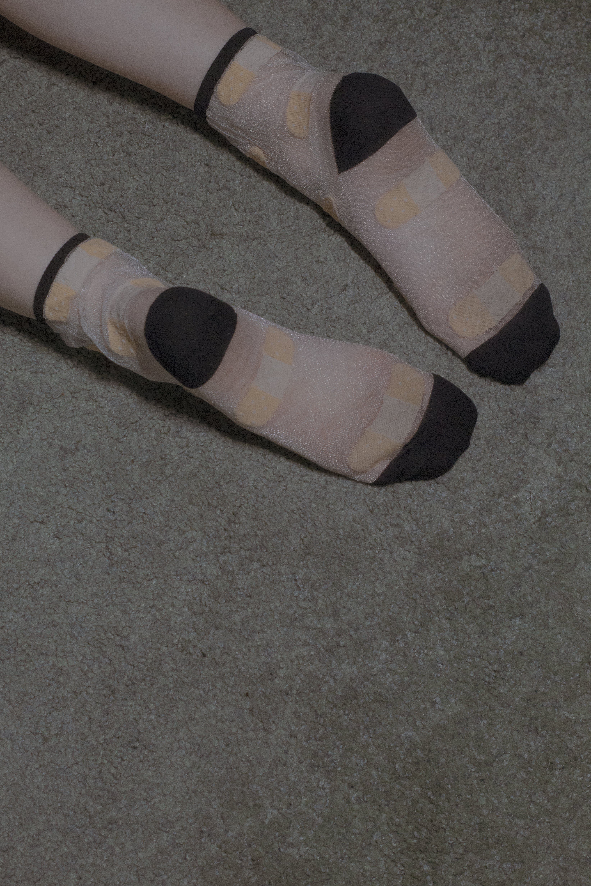
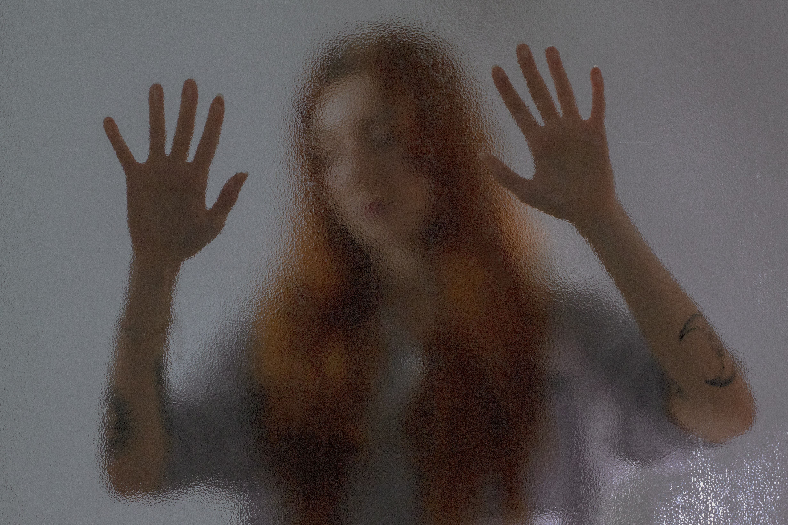
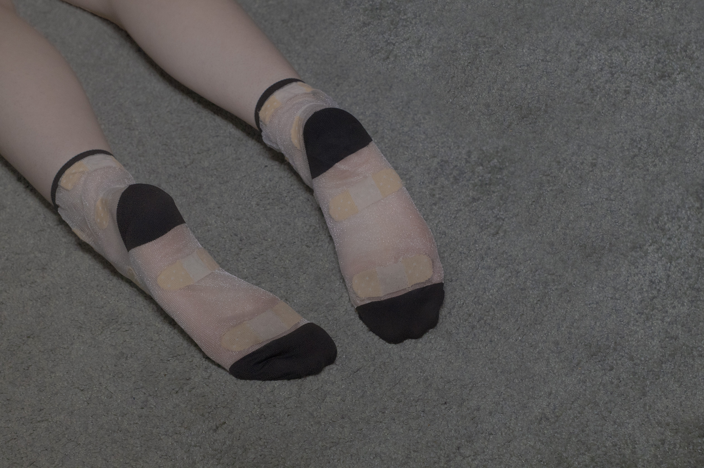
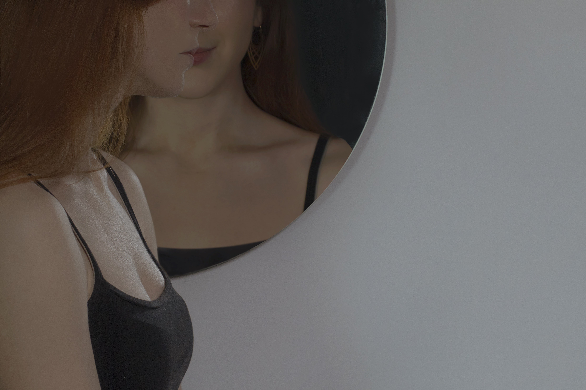
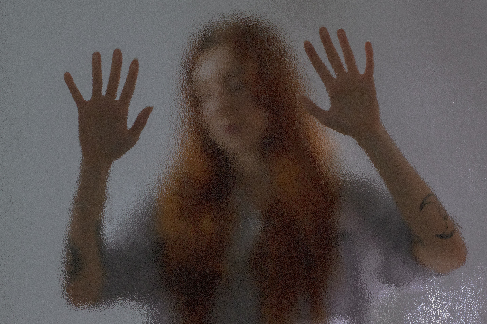
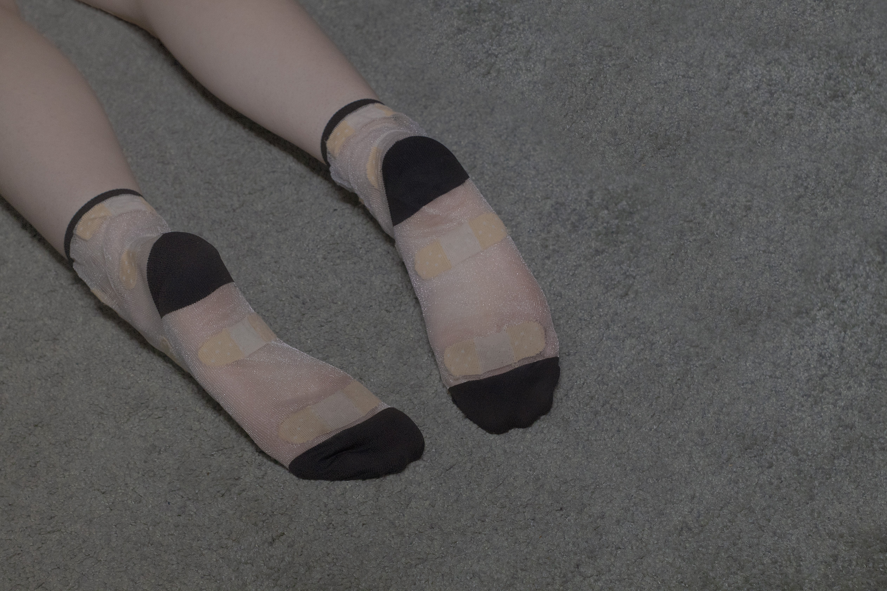
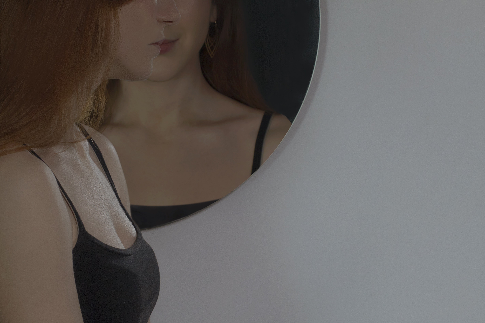

“I fear others have more rewarding opportunities than me.”“I get worried when I observe my friends are having fun without me.”“I'm overloaded of anxiety when I don't know what my friends are up to.”“If I'm not able to understand my friends in jokes, I feel as I'm lost in an ocean.”“Sometimes, I wonder if it's an obligation to spend time knowing what is going on.”“When I have good time it is important for me to share the details online to not to fall in oblivion.”“When I'm ousted from a planned get-together it bothers me.”“When I go on vacation, for me is an obsession to keep tabs on what my friends are doing.”
Fear of missing out (FOMO) is social anxiety resulting from the belief that others can have rewarding experiences, while the person feeling anxiety does not.

ABOUT
TEST
“Only by knowing the name of a thing can it actually take shape in one's head.”
ABOUT FOMO
The English acronym FOMO (Fear of Missing Out) was coined in the 90' and then included in the Oxford English Dictionary, which gives the following definition: “Anxiety that at that moment an event may occur somewhere else interesting or exciting, frequently generated by posts viewed on a social medium ”.
The Theory of Self-Determination, formulated by Edward L. Deci and Richard M. Ryan in the 70's and 80's, allows us to understand why FOMO can actually create psychological distress.
The theory is based on three innate and universal psychological needs: the need for competence, the need for relationships and the need for autonomy.
The feeling of kinship or connection with others, therefore, is a legitimate psychological need that influences the psychological health of people, in this theoretical framework, FOMO can be understood as a self-regulating state deriving from the situational perception that, for a long time term, their needs are not met.
FOMO involves the desire, which can become obsessive, to stay constantly updated and to monitor the activities of the people with whom you have an online and offline relationship, thus making Social Networks the origin and "cure" of the problem: The showcase digital leads to incessantly comparing one's life with that of others, generating dissatisfaction thus leading the individual to use social media more to compensate for it.
CONSEQUENCES
Although the first letter of the acronym FOMO stands for "Fear", the sensation it generates is closer to anxiety than to fear: The anxiety of being alone, of being alone in front of a world as vast as the Internet, can generate bewilderment.
As has already been said, often those who tend to suffer from the Syndrome are because they already have, in their psychological baggage, personal insecurities and dissatisfactions. Obviously, this new condition only worsens the situation and the perception of oneself, thus leading the individual into an infinite cycle between illness and Social Networks.
Exclusion Syndrome is not considered a mental illness and does not need to be treated, but it can become so stressful, even pathological, that it can even cause health damage.
In addition to all the wasted time people spend on the Internet, "Fear of Missing Out" can also lead to psychological and physical harm, such as:
- Disturbances in concentration;
- Inner restlessness;
- Depressive state of mind;
- Stress;
- Insomnia problems;
- Psychosomatic disorders;
METHODS TO REDUCE THE SYNDROME
- Limit the use of social networks through apps, such as Space, which allows you to control the time of use of the apps and limit it;
- Accept that you cannot always have everything you want in life, clarify values;
- Writing a gratitude diary, this will not only improve mood and satisfaction with life, but also the quality of sleep and lower the level of stress;
- Do mindfulness exercises through meditation, focusing on oneself to avoid traveling too much with the mind on issues concerning the past or the future;
- Cultivate friendships offline, in real life, otherwise start having a hobby;
FIND OUT IF YOU CAN SUFFER FROM FOMO
(From Fear of Missing Out Scale: FoMOs by Przybylski, Murayama, DeHann, & Gladwell)
Below is a collection of statements about your everyday experience.
Please answer according to what really reflects your experiences
rather than what you think your experiences should be.
1. I fear others have more rewarding experiences than me.
Not at all true of me
Extremely true of me
2. I fear my friends have more rewarding experiences than me.
Not at all true of me
Extremely true of me
3. I get worried when I find out my friends are having fun without me.
Not at all true of me
Extremely true of me
4. I get anxious when I don't know what my friends are up to.
Not at all true of me
Extremely true of me
5. It is important that I understand my friends "in jokes."
Not at all true of me
Extremely true of me
6. Sometimes, I wonder if I spend too much time keeping up with what is going on.
Not at all true of me
Extremely true of me
7. It bothers me when I miss an opportunity to meet up with friends.
Not at all true of me
Extremely true of me
8. When I have a good time it is important for me to share the details online.
Not at all true of me
Extremely true of me
9. When I miss out on a planned get-together it bothers me.
Not at all true of me
Extremely true of me
10. When I go on vacation, I continue to keep tabs on what my friends are doing.
Not at all true of me
Extremely true of me
37/50
HIGH PROBABILITY THAT YOU MAY SUFFER FROM FOMO
The test result notes that there is a high probability that you are suffering
from FOMO. Monitor the symptoms and, if you have the perception that they
are getting worse, consider the possibility of a consultation.
 




